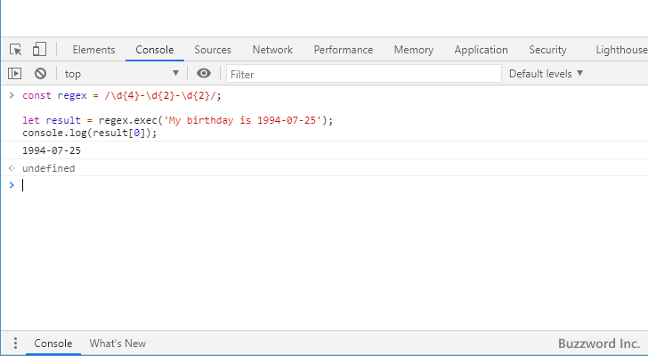
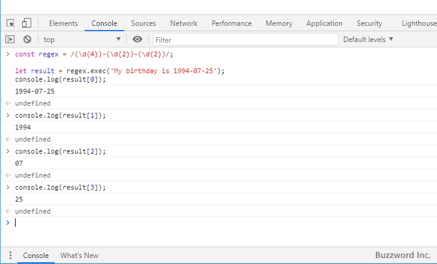
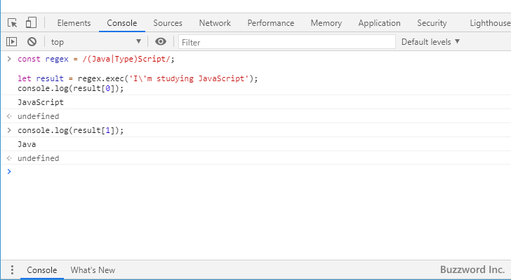

- Home ›
- 正規表現入門 ›
- 正規表現の色々な書き方
キャプチャグループを使って正規表現パターンの一部にマッチした文字列を取得する
正規表現ではパターン全体にマッチした文字列を取得することができますが、パターンの中の一部の部分をキャプチャグループと呼ばれる括弧()で囲うことで、括弧で囲われたパターンの部分にマッチした文字列を取得することができます。ここではキャプチャを使って正規表現パターンの一部にマッチした文字列を取得する方法について解説します。
※ キャプチャグループの括弧()は、グループ化で使用している括弧()と同じものです。
キャプチャグループにマッチした文字列を取得する
正規表現ではパターンにマッチするかどうかを調べるだけでなく、対象の文字列の中でどの部分がパターンにマッチしたのかを取得することができます。次のサンプルをみてください。
Pattern ： \d{4}-\d{2}-\d{2}
String ： My birthday is 1994-07-25
対象の文字列はパターンにマッチし、マッチした部分は '1994-07-25' になります。 JavaScript を使って記述すると次のようになります。
const regex = /\d{4}-\d{2}-\d{2}/;
let result = regex.exec('My birthday is 1994-07-25');
console.log(result[0]);
--> 1994-07-25

上記ではパターン全体にマッチした文字列を取得していますが、キャプチャグループを使用することでパターンの中の一部分にマッチした文字列を取得することができます。キャプチャグループはパターンの中の任意の場所を括弧()で囲ってください。キャプチャグループにマッチした文字列のことをキャプチャと呼びます。
次のサンプルではパターンの中に 3 つのキャプチャグループが含まれます。
Pattern ： (\d{4})-(\d{2})-(\d{2})
String ： My birthday is 1994-07-25
Group1 ： (\d{4})
Group2 ： (\d{2})
Group3 ： (\d{3})
対象の文字列がパターンにマッチすると、パターン全体にマッチした文字列を取得できるだけでなく、キャプチャグループに記述されたパターンの部分にマッチした文字列もそれぞれ取得することができます。キャプチャ1は '1994'、キャプチャ2には '07' 、キャプチャ3 には '25' が保管されます。
JavaScript を使って記述すると次のようになります。
const regex = /(\d{4})-(\d{2})-(\d{2})/;
let result = regex.exec('My birthday is 1994-07-25');
console.log(result[0]);
--> 1994-07-25
console.log(result[1]);
--> 1994
console.log(result[2]);
--> 07
console.log(result[3]);
--> 25

このようにキャプチャグループを使用することで、パターン全体の中の一部のパターンにマッチした文字列を取得することができます。
キャプチャを行わないキャプチャグループを記述する
パターンの中で括弧()で囲うとキャプチャグループとして設定されますが、キャプチャグループはキャプチャを行う以外にグループ化を行う目的でも使用します。ただどのような利用目的だとしても括弧で囲んだ場合はキャプチャが行われます。次のサンプルをみてください。
Pattern ： (Java|Type)Script String ： I'm studying JavaScript
パターンの中で (Java|Type) は選択を行うためにグループ化をしているものですが、文字列をパターンにマッチさせると括弧()で囲んだ部分はキャプチャが行われます。
JavaScript を使って実際に試してみます。
const regex = /(Java|Type)Script/;
let result = regex.exec('I\'m studying JavaScript');
console.log(result[0]);
--> JavaScript
console.log(result[1]);
--> Java

グループ化が目的のキャプチャグループでしたが、キャプチャが行われました。
通常はキャプチャが行われても利用しなければいいだけなのであまり気にされる必要はありません。ただパターンの中にキャプチャが必要なものと不必要なものがそれぞれ含まれている場合に、キャプチャが不要なものはキャプチャしないように設定しておくことでキャプチャを取得する記述がよりシンプルにできます。
キャプチャグループを記述するときにキャプチャが必要ない場合には次の書式を使用します。
(?:パターン)
「(」と「)」で囲う代わりに「(?:」と「)」で囲います。この書式で囲んだ場合はグループ化としての機能は同じですがキャプチャは行われません。
次のサンプルではパターンの中に 3 つのキャプチャグループが含まれますが、 1 つ目のキャプチャグループはキャプチャが行われません。
Pattern ： (?:\d{4})-(\d{2})-(\d{2})
String ： My birthday is 1994-07-25
JavaScript を使って実際に試してみます。
const regex = /(?:\d{4})-(\d{2})-(\d{2})/;
let result = regex.exec('My birthday is 1994-07-25');
console.log(result[0]);
--> 1994-07-25
console.log(result[1]);
--> 07
console.log(result[2]);
--> 25

パターンの中にキャプチャグループは 3 つありますが、キャプチャには 2 つめのキャプチャグループでキャプチャした値が格納され、キャプチャ2には 3 つめのキャプチャグループでキャプチャした値が格納されました。
-- --
キャプチャを使って正規表現パターンの一部にマッチした文字列を取得する方法について解説しました。
( Written by Tatsuo Ikura )

著者 / TATSUO IKURA
初心者～中級者の方を対象としたプログラミング方法や開発環境の構築の解説を行うサイトの運営を行っています。